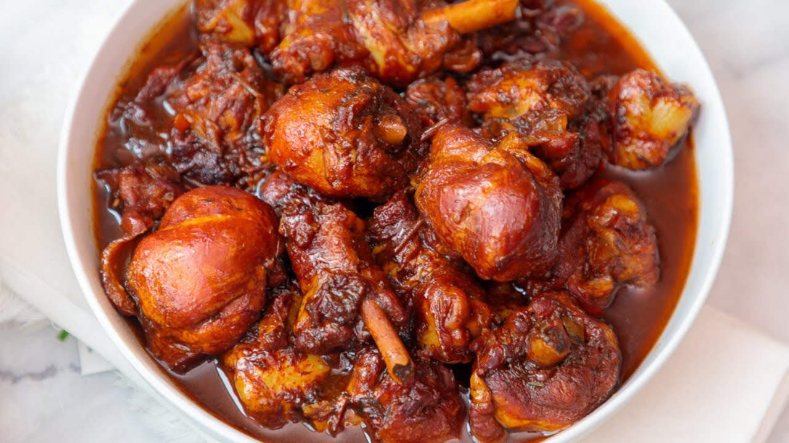

Brown Stew Chicken

DESCRIPTION
Brown stew chicken is among the most popular food in Trinidad. seasoned with local herbs and spices
then browned by submerging in caramelized brown sugar. After the meat is nice and brown, add water to cover
and let the chicken cook down until soft and you have a thick gravey.
INGREDIENTS
- 2 Whole Chickens
- 2 1/4 Tsp Salt
- 3/4Tsp Black Pepper
- 2 Tsp Garlic, minced
- 2 Tbsp Onions, minced
- 2 Tbsp Celery, chopped
- 1 Tbsp Chadon Beni/Culantro, minced
- 1 Tbsp Chives, chopped
- 3 Pimento Peppers, minced
- 2 Tbsp Fresh Green Seasoning (Optional)
- 2 Tbsp Tomato Paste (Optional)
- 2 Tbsp Vegetable Oil
- 4 1/2 Tbsp Brown Sugar
- 1/4 Cup Tomatoes, Chopped
- 1 Cup Water
- 1 Scotch Bonnet Pepper
- 2 Tbsp Salted Butter
- Salt & Black Pepper, to taste
STEPS
- Place washed chickens on a clean cutting board and pat dry.
- Cut each chicken into 12 – 14 pieces, ensuring to cut breast into halves, thighs into two pieces and back bone into two or three pieces.
- Place chicken into a bowl, sprinkle on the salt and black pepper and rub liberally over the surface areas of chicken pieces and on all sides.
- Add the garlic, onions, celery, chadon beni, chives, pimento peppers and continue massaging and integrating all herbs onto the pieces.
- Lastly add the bottled green seasoning and mix one last time. Let marinate up to overnight for maximum flavor or at least half hour if you’re in a hurry.
- Place a medium high sided cast iron pot on high heat. Once hot, add vegetable oil and swirl to cover base of the pot. Immediately sprinkle in the brown sugar.
- At this time, allow sugar to progress through the different caramelization stages.
- Sugar should start to turn a light brown colour after 2 minutes then progress to a bubbly blond brown colour at three minutes. Stir sugar with a pot soon to evenly mix and disperse heated oil and cook for an additional 20 seconds until the sugar develops a deep amber and intense brown colour with puffing bubbles.
- Immediately add your seasoned chicken pieces to the pot carefully and away from you to prevent any splashing and stir chicken pieces in the pot to evenly coat with the browned sugar.
- Once pieces are coated evenly, cover pot and let chicken cook for 8 – 10 minutes to allow it to spring its natural water.
- Remove cover; chicken should have developed a medium brown tinged colour and some water would have accrued at the bottom.
- Add the chopped tomatoes, the cup of water and stir to incorporate. Place hot pepper in, reduce heat to medium, cover and let chicken cook for 15 – 18 minutes.
- Remove cover, chicken would have developed an intensified brown colour at this point and some gravy would still be present in the pot. Add the salted butter, allow to cook for an additional 5 minutes uncovered to reduce/thicken gravy, then taste chicken and sauce for seasonings.
- You may want to add some additional salt, black pepper or your favorite spices at this point to tailor flavor to your desire.
- Remove from heat and cover pot for 5 minutes to allow chicken and juices to rest before eating.
- Serve with simply boiled rice, macaroni pie and callaloo or maybe with scalloped potatoes for a great meal.